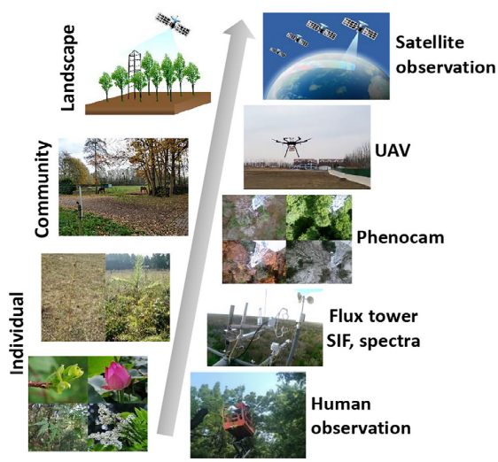
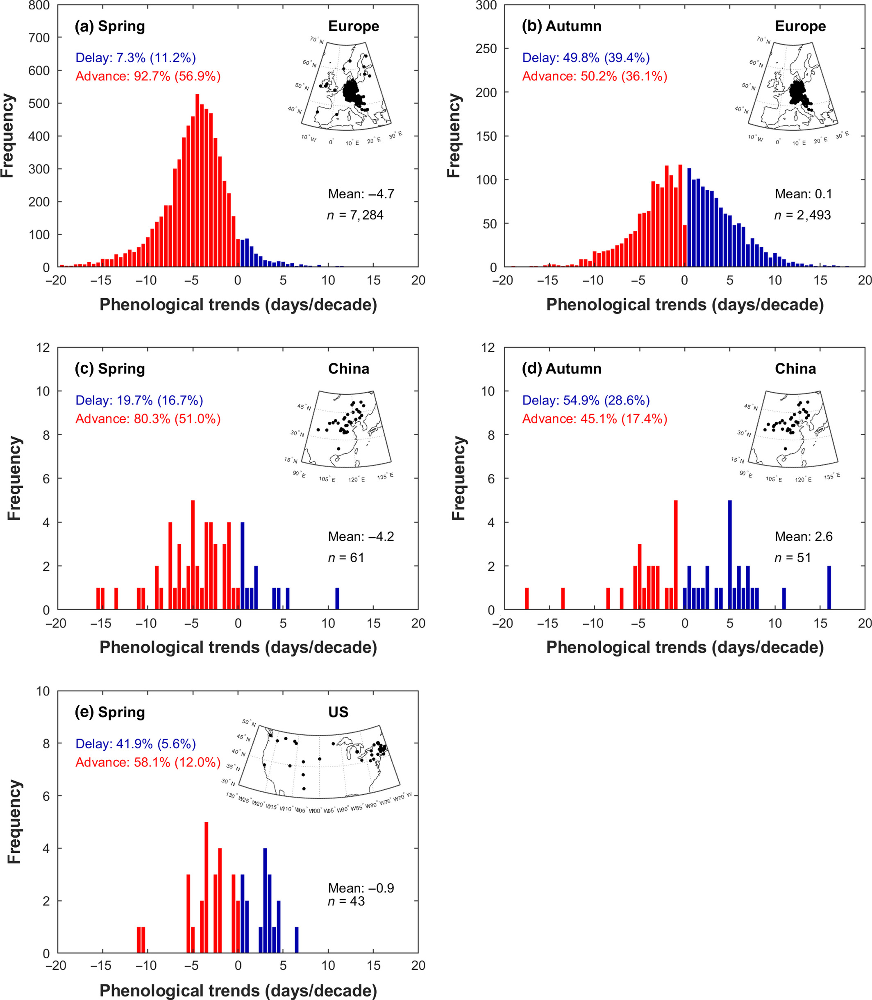
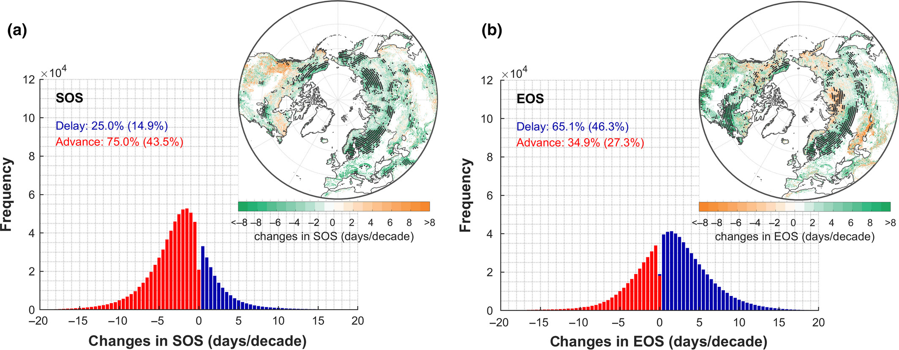
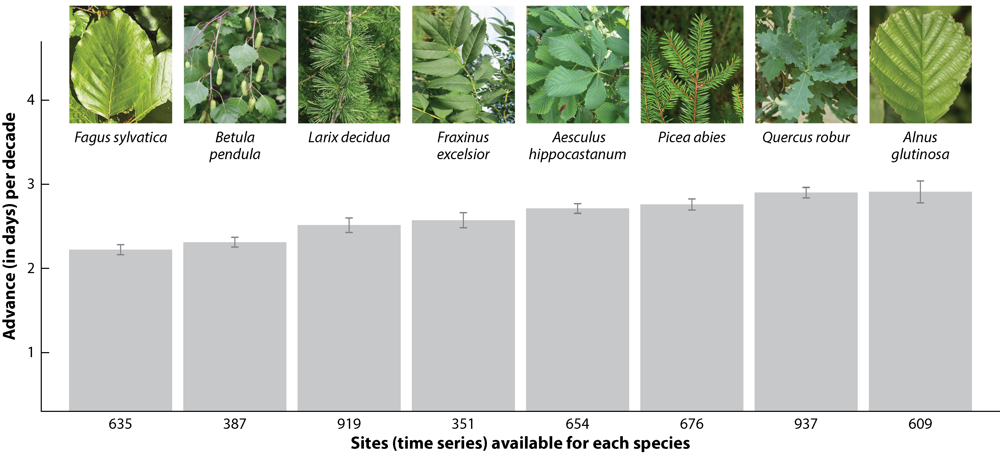
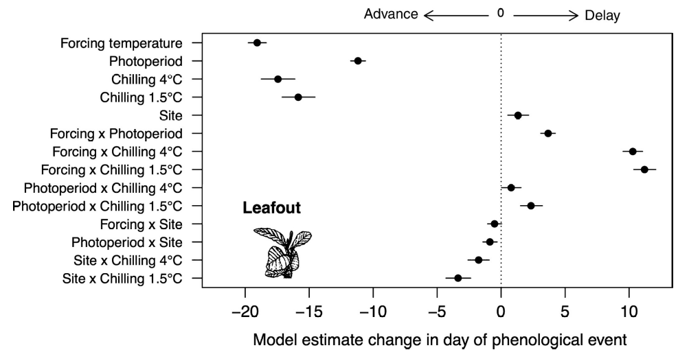
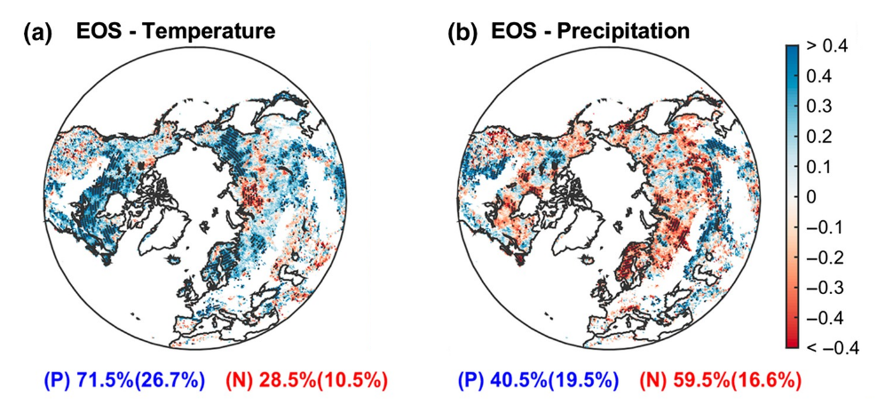
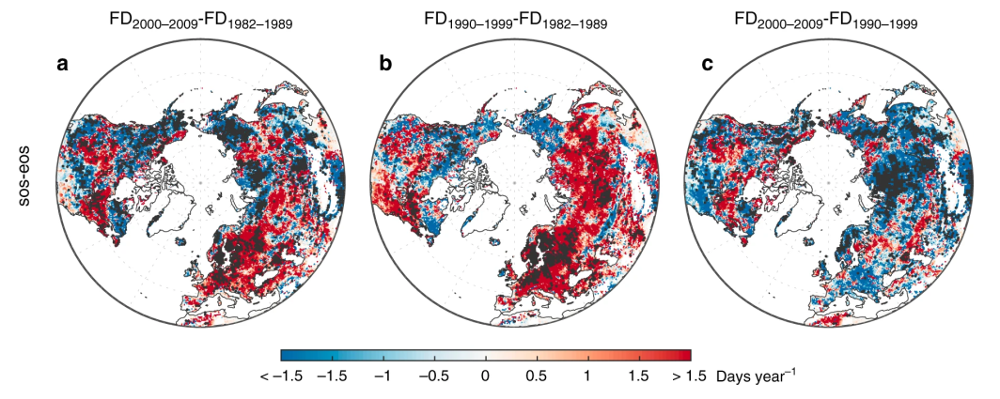
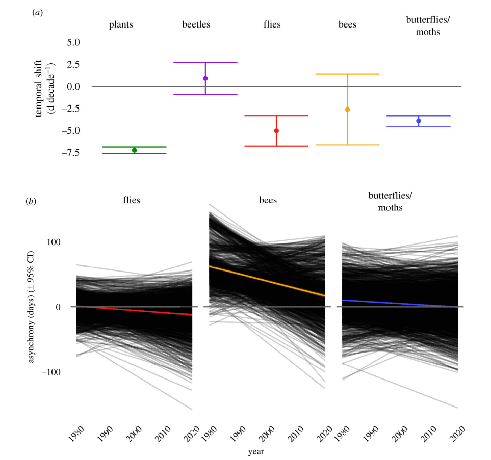

13 Global environmental change
13.1 Phenology changes
Authored by Lucas Gsponer, Fabio Jakob and Rasheed Abdelsamed. Edited by Laura Marqués.
In Section 6.2, we provided a basis for phenology. In this section, we present some insights on recent changes observed in plant phenology, their main drivers, and the climatic feedbacks of vegetation phenology.
13.1.1 Plant phenology
Plant phenology is the study of the timing of periodic biological events in plants, such as leaf unfolding and leaf senescence. These events are commonly influenced by environmental factors like temperature, radiation, and water availability. A phenological event is described as a point in the annual life cycle of a plant, generally marking the start or endpoint of a phenophase, and can be recorded as a calendar date. The start of the season (SOS) or spring phenology refers to the time when plants first exhibit significant biological activity after a period of dormancy. This is often marked by the leaf-out or leaf unfolding. The end of the season (EOS) or autumn phenology denotes the point at which plants transition back to a state of dormancy or reduced biological activity. This period is typically marked by leaf senescence, defined as leaf coloring and shedding. SOS and EOS are commonly expressed as day-of-year (DOY) with values ranging from 1 (1 January) to 365 (366 in leap years; 31 December). Defining the precise start and end of the season can vary depending on the specific plant species and local environmental conditions.
13.1.2 Methods of plant phenology
Phenology observations are measured at different scales through various methods (Figure 13.1), ranging from ground-based to remote sensing technologies.
Ground-based observations involve manually recording specific phenophases. Observers, including scientists and citizen scientists, track these changes on the ground, which provides detailed local data. These observations can be unevenly distributed across regions and may lack consistency due to varying methods among observers. Efforts have been made to compile large-scale and uniform observations. The PEP725 (Pan European Phenology Project) is a collaborative database that collects and shares phenological data across Europe (Templ et al. 2018) and is especially helpful in investigating trends, comparing seasonal shifts, and analyzing regional responses of species to environmental changes. The phenological events can be described using the European-based BBCH coding system (Bilogische Bundesanstalt, Bundessortenamt und Chemische Industrie) which provides a standardized scale for identifying plant stages (Meier et al. 2009).
Remotely sensed solar-induced chlorophyll fluorescence (SIF) measures light re-emitted by chlorophyll during photosynthesis thus representing photosynthetic activity and more accurately capturing seasonal GPP dynamics, particularly in evergreen forests (Smith et al. 2018). However, the temporal and spatial resolution of SIF data is still very coarse (Sun et al. 2017).
PhenoCams are time-lapse cameras that allow monitoring of seasonal vegetation changes and offer high-frequency data at the community level (Richardson et al. 2018). These camera-based phenology networks are currently located in many carbon flux sites to be linked with measures of ecosystem structure and functions (Tang et al. 2016).
Unmanned aerial vehicles (UAVs) are equipped with multispectral or hyperspectral cameras, providing high-resolution imagery of vegetation from tree to landscape level. This enables a direct link between field-based and remote-sensing observations (Klosterman et al. 2018).
In recent decades, remote sensing techniques have significantly enhanced traditional observations of plant phenology. Satellite remote sensing data, particularly from indices like the Normalized Difference Vegetation Index (NDVI) and the Enhanced Vegetation Index (EVI), are used to detect the timing of key phenological events based on vegetation greenness across landscapes (Liu, Fu, et al. 2018).
13.1.3 Recent trends in plant phenology
13.1.3.1 Evidence from ground-based observations
Over the past few decades, spring phenology has consistently advanced across the Northern Hemisphere. In Europe, spring leaf-out significantly advanced during the period 1982–2011 at an average rate of -0.47 days yr-1 for deciduous trees (Fu et al. 2014) (Figure 13.2), based on data from the PEP725 network (Templ et al. 2018). Similarly, in China, the mean advance of spring leaf unfolding was -0.42 days yr-1 for the same period (Ge et al. 2015) (Figure 13.2). In North America, the trend was slower, with the SOS advancing by -0.09 days yr-1 for the period 1982-2011 (Figure 13.2), based on stations of the USA National Phenology Network (US-NPN data).
In contrast, autumn leaf senescence has shown a weaker and less consistent trend (Piao et al. 2019), and fewer studies have investigated in situ EOS trends (Gallinat, Primack, and Wagner 2015). In Europe, autumnal events have been delayed by only 0.01 days yr-1 between 1982 and 2011 (Fu et al. 2014) (Figure 13.2), using records from the PEP725 network (Templ et al. 2018). In China, the EOS was delayed more substantially, by 0.26 days yr-1 for this period (Ge et al. 2015) (Figure 13.2). Although there was not enough data for leaf senescence in the US-NPN, other studies showed leaf coloring in the USA has also been delayed ranging from 0.24 to 0.36 days yr-1 (Jeong and Medvigy 2014).

13.1.3.2 Evidence from remote-sensing data
An early onset of the SOS has been observed also from satellite NDVI records from the Global Inventory Modeling and Mapping Studies (GIMMS) during 1982–2011 in approximately 75% of the Northern Hemisphere, while a delay was found in other regions, primarily in western North America (Figure 13.3). Some recent satellite‐based studies suggest that the trend of advancing SOS has decelerated since 2000 (Park et al. 2018). Altogether, the advancement of the SOS has an average rate of 0.21 days yr-1 (Piao et al. 2019).
A delay in the EOS was reported over the past decades, with an overall trend of 0.18 days yr-1 (Liu et al. 2016). Spatially, EOS trends were less homogeneous than SOS trends, with ~65% of the Northern Hemisphere showing a delay in EOS while an advance was found in ~35% of the territory, mainly in Siberia and arid/semi‐arid regions (Figure 13.3).

Both ground-based observations and satellite‐based studies are consistent and generally show an advance in spring phenology and a delay in autumn leaf senescence over the past decades. However, these changes in SOS and especially on EOS are not consistent across the globe (Piao et al. 2019) and differ by regions, periods considered, and plant species (Figure 13.4).

13.1.4 Main drivers of plant phenology
The timing of plant phenology events is determined by various biological and environmental drivers. As we discussed in Section 6.2, the way how these factors influence plant phenology varies between phenophases.
Spring temperatures, photoperiod and winter chilling are the most important factors controlling plant phenology in temperate and boreal forests (Flynn and Wolkovich 2018). Experimental studies have shown that warmer temperatures, longer photoperiods, and additional chilling all caused large advances in spring leaf-out (Figure 13.5). In addition, the interaction between drivers also affects the timing of the phenophases. For example, insufficient winter chilling may be compensated by warmer temperatures. Yet, phenological responses to climatic factors appear to be species-specific (Körner and Basler 2010) and vary across latitudes (Alecrim, Sargent, and Forrest 2023).

Leaf senescence is also positively correlated with temperature. In the Northern Hemisphere, remote-sensing data has shown a positive correlation between EOS and temperature in more than 70% of the territory (Figure 13.6). Plant phenology can also be influenced by water and nutrient availability, particularly in regions where these resources are limited. Partial correlations between precipitation and EOS were negative at high latitudes, but positive in dry regions, suggesting that higher water availability might delay autumn senescence (Figure 13.6).

In addition to the environmental factors, the timing of the autumn senescence is also affected by the timing of spring phenology Figure 13.7. An earlier SOS in spring appears to induce an earlier EOS in autumn. The mechanism behind this pattern may be related to leaf longevity and cell aging (Lim, Kim, and Gil Nam 2007) but may also be associated with an increase in soil water loss earlier in the growing season inducing a premature defoliation due to drier soil conditions.
13.1.5 Phenology feedbacks on climate change
13.1.6 Other impacts of phenological changes
13.1.6.1 Increased frost events during the growing season
Climate warming is driving an advance of leaf unfolding in trees, promoting longer growing seasons. However, the advance of the SOS can also increase the risk of frost events (Augspurger 2013). These frost events after the SOS can affect the structure and function of terrestrial ecosystems and have important environmental and economic consequences (Hufkens et al. 2012).

Still, no agreement exists on whether frost risks increase or decrease under global warming (Vitasse, Lenz, and Körner 2014). An empirical study in Swiss forests found sufficient time between the last spring frost and leaf unfolding (Bigler and Bugmann 2018). These safety margins (calculated as the difference between DOY~leaf unfolding~ and DOY~last frost~) varied between species and across elevations. Further, they showed generally negative trends, i.e., decreasing safety margins and increasing frost risk over the last decades.
13.1.6.2 Plant–pollinator phenological mismatches
Changes in the phenological synchrony of plant-animal interactions have the potential to significantly impact the structure and dynamics of plant communities (Kharouba et al. 2018). Plant–pollinator systems are expected to be particularly vulnerable to phenological mismatches due to their mutualistic interactions (Benadi et al. 2014). However, there is little evidence for mismatches involving plants and pollinators (Hegland et al. 2009). The onset of flowering in plants and first appearance dates of pollinators appear to advance at similar rates in response to warmer temperatures, maintaining their phenological synchrony (Bartomeus et al. 2011, 2013). A recent empirical study on plant-pollinator interactions in Germany and the UK showed higher phenological shifts in plants compared to insect groups (Figure 13.9). These shifts resulted in an increase in plant-pollinator synchrony with some insect groups during the last decades (Figure 13.9) (Freimuth et al. 2022). In fact, Most of the empirical studies have not detected phenological mismatches pointing out the high synchronization mechanisms between different pollinators and their floral hosts (Renner and Zohner 2018).
